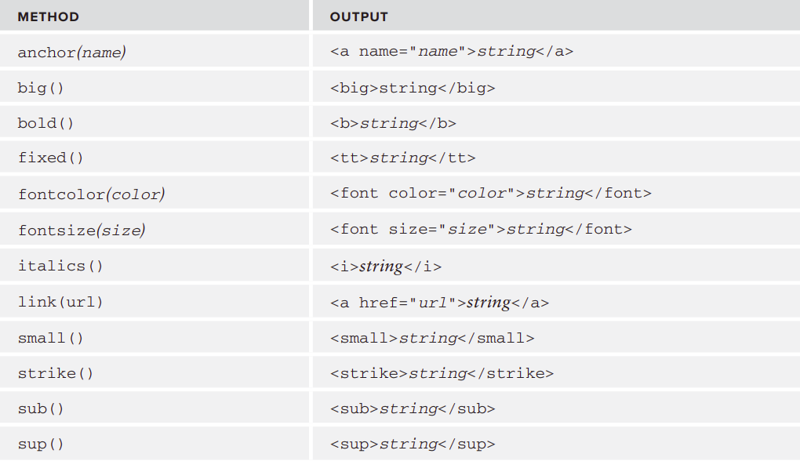

A reference value (object) is an instance of a specifi c reference type. In ECMAScript, reference types are structures used to group data and functionality together and are often incorrectly called classes.
objects are considered to be instances of a particular reference type. New objects are created by using the new operator followed by a constructor. A constructor is simply a function whose purpose is to create a new object
This code creates a new instance of the Object reference type and stores it in the variable person.
The constructor being used is Object(), which creates a simple object with only the default properties and methods.
ECMAScript provides a number of native reference types, such as Object.
const person = new Object();
The new operator lets developers create an instance of a user-defined object type or of one of the built-in object types that has a constructor function.
new constructor[([arguments])]
The new keyword does the following things:
The constructor method is a special method of a class for creating and initializing an object of that class.
class Person {
constructor(name) {
this.name = name;
}
sayHello() {
console.log(`Hello, my name is ${this.name}`);
}
}
const maximus = new Person('Maximus');
maximus.sayHello();
There are two ways to explicitly create an instance of Object.
const person = new Object(); // new operator
person.name = "Maximus";
person.age = 29;
const person = { // literal notation
name : "Maximus",
age : 29
};
Property names can also be specifi ed as strings or numbers when using object literal notation
const person = {
“name” : "Maximus",
“age” : 29,
5: true
};
const person = {}; //same as new Object()
person.name = "Maximus";
person.age = 29;
object literal notation requires less code and visually encapsulates all related data. In fact, object literals have become a preferred way of passing a large number of optional arguments to.
function displayInfo(args) {
let output = '';
if (typeof args.name == “string”)
output += “Name: “ + args.name + “\n”;
if (typeof args.age == “number”)
output += “Age: “ + args.age + “\n”;
console.log(output);
}
displayInfo({ name: "Maximus", age: 29});
Although object properties are typically accessed using dot notation, which is common to many object-oriented languages, it’s also possible to access properties via bracket notation. When you use bracket notation, a string containing the property name is placed between the brackets.
const person = {
“name” : "Maximus",
“age” : 29
};
const propertyName = “name”;
alert(person[propertyName]); // Maximus
person[propertyName] = 'Name';
ECMAScript arrays are ordered lists of data, but unlike in other languages, they can hold any type of data in each slot. This means that it’s possible to create an array that has a string in the first position, a number in the second, an object in the third, and so on.
ECMAScript arrays are also dynamically sized, automatically growing to accommodate any data that is added to them
const colors = new Array();
const colors = new Array(“red”, “blue”, “green”);
const names = new Array(“Greg”); //create an array with one item, the string “Greg”
It’s possible to omit the new operator when using the Array constructor. It has the same result.
If you know the number of items that will be in the array, you can pass the count into the constructor, and the length property will automatically be created with that value
const colors = Array(“red”, “blue”, “green”);
const names = Array(“Greg”); //create an array with one item, the string “Greg”
const colors = new Array(20); // create an array with 20 items
const values = [1,2,]; //AVOID! Creates an array with 2 or 3 items
const options = [,,,,,]; //AVOID! creates an array with 5 or 6 items
The index provided within the square brackets indicates the value being accessed.
To get and set array values, you use square brackets and provide the zero-based numeric index of the value
The number of items in an array is stored in the length property
const colors = [“red”, “blue”, “green”]; //define an array of strings
alert(colors[0]); //display the first item
colors[2] = “black”; //change the third item
colors[3] = “brown”; //add a fourth item
const names = Array("Greg", "Maximus")
names.length; // 2
length is that it’s not read-only
By setting the length property, you can easily remove items from or add items to the end of the array
If the length were set to a number greater than the number of items in the array, the new items would each get fi lled with the value of undefined
const colors = [“red”, “blue”, “green”, "Yellow"];
colors.length = 2; alert(colors[2]); //undefined
const colors = [“red”, “blue”, “green”]; //creates an array with three strings
colors.length = 4; alert(colors[3]); //undefined
The length property can also be helpful in adding items to the end of an array
The last item in an array is always at position length – 1The new length is automatically calculated when an item is placed into a position that’s outside of the current array size, which is done by adding 1 to the position
const colors = [“red”, “blue”, “green”]; //creates an array with three strings
colors[colors.length] = “black”; //add a color (position 3)
colors[colors.length] = “brown”; //add another color (position 4)
colors[99] = “black”; //add a color (position 99)
alert(colors.length); //100
The instanceof operator in JavaScript is used to check the type of an object at run time. It returns a boolean value if true then it indicates that the object is an instance of a particular class and if false then it is not
const fruits = ["Apple", "Mango", "Banana"];
const isArray = fruits instanceof Array;
const isObject = fruits instanceof Object;
const isString = fruits instanceof String;
const isBoolean = fruits instanceof Boolean;
const fruits = ["Apple", "Mango", "Banana"];
if (Array.isArray(fruits)){
//do something on the array
}
if(ruits.constructor.name === 'Array') {
//do something on the array
}
var colors = [“red”, “blue”, “green”]; //creates an array with three strings
alert(colors.toString()); //red,blue,green
alert(colors.valueOf()); //red,blue,green
alert(colors); //red,blue,green
The join() method accepts one argument, which is the string separator to use,and returns a string containing all items
const colors = [“red”, “green”, “blue”];
alert(colors.join(“,”)); //red,green,blue
alert(colors.join(“||”)); //red||green||blue
A stack is referred to as a last-in-first-out (LIFO) structure
The push() method accepts any number of arguments and adds them to the end of the array, returning the array’s new length.
The pop() method, on the other hand, removes the last item in the array, decrements the array’s length, and returns that item
const colors = new Array(); //create an array
let count = colors.push(“red”, “green”); //push two items
alert(count); //2 length of Array
const item = colors.pop(); //get the last item
alert(item); //”black”
ECMAScript also provides an unshift() method for arrays. As the name indicates, unshift() does the opposite of shift()
queues restrict access in a fi rst-in-fi rst-out (FIFO) data structure
const colors = [“red”, “green”, “black”];
const item = colors.shift(); //get the first item
alert(item); //”red” alert(colors.length); //2
const colors = new Array(); //create an array
let count = colors.unshift(“red”, “green”); //push two items
alert(count); //2
count = colors.unshift(“black”); //push another item on
reordering of items already in the array: reverse() and sort()
reverse() method simply reverses the order of items in an array.
var values = [1, 2, 3, 4, 5];
values.reverse();
alert(values); //5,4,3,2,1
By default, the sort() method puts the items in ascending order — with the smallest value fi rst and the largest value last. To do this, the sort() method calls the String() casting function on every item and then compares the strings to determine the correct order. This occurs even if all items in an array are numbers
const values = [0, 1, 5, 10, 15];
values.sort();
alert(values); //0,1,10,15,5
The sort() method allows you to pass in a comparison function that indicates which value should come before which
function compare(value1, value2) {
if (value1 < value2) {
return -1;
} else if (value1 > value2) {
return 1;
} else {
return 0;
}
}
const values = [0, 1, 5, 10, 15];
values.sort(compare);
alert(values); //0,1,5,10,15
const colors = [“red”, “green”, “blue”];
const colors2 = colors.concat(“yellow”, [“black”, “brown”]);
let colors = [“red”, “green”, “blue”, “yellow”, “purple”];
let colors2 = colors.slice(1);
let colors3 = colors.slice(1,4);
alert(colors2); //green,blue,yellow,purple
alert(colors3); //green,blue,yellow
The methods each return the position of the item in the array or –1 if the item isn’t in the array.
const numbers = [1,2,3,4,5,4,3,2,1];
alert(numbers.indexOf(4)); //3
alert(numbers.lastIndexOf(4)); //5
alert(numbers.indexOf(4, 4)); //5
alert(numbers.lastIndexOf(4, 4)); //3
reduce method iterate over all items in the array and build up a value that is ultimately returned
reduceRight() method works in the same way, just in the opposite direction
const values = [1,2,3,4,5];
const sum = values.reduce(function(prev, cur, index, array){
return prev + cur;
}); //15
var values = [1,2,3,4,5];
var sum = values.reduceRight(function(prev, cur, index, array){
return prev + cur;
}); // 15
Date type stores dates as the number of milliseconds that have passed since midnight on January 1, 1970 UTC (Universal Time Code). Using this data storage format, the Date type can accurately represent dates 285,616 years before or after January 1, 1970.
To create a date object, use the new operator along with the Date constructor
const now = new Date();
const date1 = new Date(2007, 0, 1); //”January 1, 2007”
const date2 = new Date(2007, 1, 1); //”February 1, 2007”
const start = Date.now(); // current date in milliseconds
const start = +new Date(); // current date in milliseconds
Some of the most interesting parts of ECMAScript are its functions, primarily because functions actually are objects. Each function is an instance of the Function type that has properties and methods just like any other reference type. Because functions are objects, function names are simply pointers to function objects and are not necessarily tied to the function itself
defi ne functions is by using the Function constructor, which accepts any number of arguments
const sum = new Function(“num1”, “num2”, “return num1 + num2”); //not recommended
Because function names in ECMAScript are nothing more than variables, functions can be used any place any other value can be used. This means it’s possible not only to pass a function into another function as an argument but also to return a function as the result of another function.
function callSomeFunction(someFunction, someArgument){
return someFunction(someArgument);
}
function add10(num){
return num + 10;
}
var result1 = callSomeFunction(add10, 10);
alert(result1); //20
Functions are objects in ECMAScript and, as mentioned previously, therefore have properties and methods. Each function has two properties: length and prototype. The length property indicates the number of named arguments that the function expects
function sayName(name){
alert(name);
}
function sum(num1, num2){
return num1 + num2;
}
alert(sayName.length); //1
alert(sum.length); //2
Three special reference types are designed to ease interaction with primitive values: the Boolean type, the Number type, and the String type
Every time a primitive value is read, an object of the corresponding primitive wrapper type is created behind the scenes, allowing access to any number of methods for manipulating the data
const s1 = “some text”;
const s2 = s1.substring(2)
. Primitive values aren’t objects, so logically they shouldn’t have methods, though this still works as you would expect. In truth, there is a lot going on behind the scenes to allow this seamless operation. When s1 is accessed in the second line, it is being accessed in read mode, which is to say that its value is being read from memory. Any time a string value is accessed in read mode, the following three steps occur
const s1 = “some text”;
const s2 = s1.substring(2);
// how the js interpreter works
const s1 = new String(“some text”);
const s2 = s1.substring(2);
s1 = null;
The major difference between reference types and primitive wrapper types is the lifetime of the object. When you instantiate a reference type using the new operator, it stays in memory until it goes out of scope, whereas automatically created primitive wrapper objects exist for only one line of code before they are destroyed
This means that properties and methods cannot be added at runtime
const s1 = “some text”;
s1.color = “red”;
alert(s1.color); //undefined
The Object constructor also acts as a factory method and is capable of returning an instance of a primitive wrapper based on the type of value passed into the constructor
const objString = new Object(“some text”);// same as new String("some text")
alert(objString instanceof String); //true
const objNumber = new Object(9);// same as new Number(9)
alert(objNumber instanceof Number); //true
const objBoolean = new Object(true);// same as new Boolean(true)
alert(objBoolean instanceof Boolean); //true
The Boolean type is the reference type corresponding to the Boolean values. To create a Boolean object, use the Boolean constructor and pass in either true or false,
const falseObject = new Boolean(false);
const result = falseObject && true; alert(result); //true
const falseValue = false;
result = falseValue && true; alert(result); //false
alert(typeof falseObject); //object
alert(typeof falseValue); //boolean
alert(falseObject instanceof Boolean); //true
alert(falseValue instanceof Boolean); //false
The Number type is the reference type for numeric values. To create a Number object, use the Number constructor and pass in any number
const numberObject = new Number(10);
const num = 10;
alert(num.toString()); //”10”
alert(num.toString(2)); //”1010”
alert(num.toString(8)); //”12”
alert(num.toString(10)); //”10”
alert(num.toString(16)); //”a”
The toFixed() method returns a string representation of a number with a specifi ed number of decimal points
const num = 10; alert(num.toFixed(2)); //”10.00”
const num = 10.005; alert(num.toFixed(2)); //”10.01”
const num = 10; alert(num.toExponential(1)); //”1.0e+1”
const numberObject = new Number(10);
const numberValue = 10;
alert(typeof numberObject); //”object”
alert(typeof numberValue); //”number”
alert(numberObject instanceof Number); //true
alert(numberValue instanceof Number); //false
The String type is the object representation for strings and is created using the String constructor
const stringObject = new String(“hello world”);
const stringValue = “hello world”;
alert(stringValue.length); //”11”
const stringValue = “hello world”;
alert(stringValue.charAt(1)); //”e”
const stringValue = “hello world”;
alert(stringValue.charCodeAt(1)); //outputs “101”
const stringValue = “hello world”;
alert(stringValue[1]); //”e”
const stringValue = “hello “;
const result = stringValue.concat(“world”); // or stringValue + “world”
alert(result); //”hello world”
const stringValue = “hello world”;
alert(stringValue.slice(3)); //”lo world”
alert(stringValue.substring(3)); //”lo world”
alert(stringValue.substr(3)); //”lo world”
alert(stringValue.slice(3, 7)); //”lo w”
alert(stringValue.substring(3,7)); //”lo w”
alert(stringValue.substr(3, 7)); //”lo worl
const stringValue = “ hello world “;
const trimmedStringValue = stringValue.trim();“hello world“
const stringValue = “hello world”;
alert(stringValue.toUpperCase()); //”HELLO WORLD”
alert(stringValue.toLowerCase()); //”hello world”
The web browser vendors recognized a need early on to format HTML dynamically using JavaScript.
The encodeURI() and encodeURIComponent() methods are used to encode URIs (Uniform Resource Identifi ers) to be passed to the browser.
The decodeURI() method decodes only characters that would have been replaced by using encodeURI().
const uri = “http://www.wrox.com/illegal value.htm#start”;
//”http://www.wrox.com/illegal%20value.htm#start”
alert(encodeURI(uri));
var uri = “http%3A%2F%2Fwww.wrox.com%2Fillegal%20value.htm%23start”;
alert(decodeURI(uri)); //http://www.wrox.com/illegal value.htm#start
The fi nal method is perhaps the most powerful in the entire ECMAScript language: the eval() method. This method works like an entire ECMAScript interpreter and accepts one argument, a string of ECMAScript (or JavaScript) to execute.
eval(“alert(‘hi’)”); // This line is functionally equivalent to the following:
alert(“hi”);
const msg = “hello world”;
eval(“alert(msg)”); //”hello world”
Though ECMA-262 doesn’t indicate a way to access the Global object directly, web browsers implement it such that the window is the Global object’s delegate. Therefore, all variables and functions declared in the global scope become properties on window
const color = “red”;
function sayColor(){
alert(window.color);
}
window.sayColor(); //”red”